What you'll use it for
AltomateHR is where your company keeps attendance, leave, claims and pay. On your phone there are five tabs along the bottom — that's all you need.
Dashboard
Where you land. Clock in and out, take breaks, see your latest payslip, and start a claim or leave request.
Claims Optional
Photograph a receipt and submit it — mileage too — then track it until you're paid.
Attendance Optional
Your hours this week and month, your history, and overtime.
Leave
Your balances, and applying for leave with an MC attached.
Payslips
Every payslip you've been issued, with the breakdown and a PDF.
AltomateHR runs in your phone's browser. Open the link once and add it to your home screen — after that it opens like any other app. How to do that.
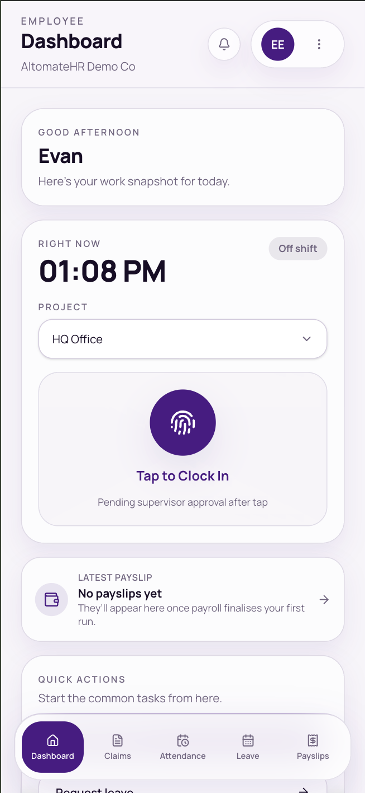
Dashboard
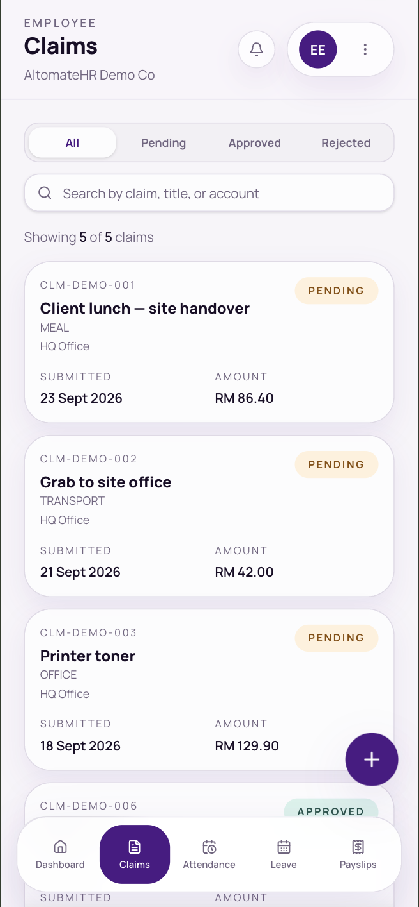
Claims
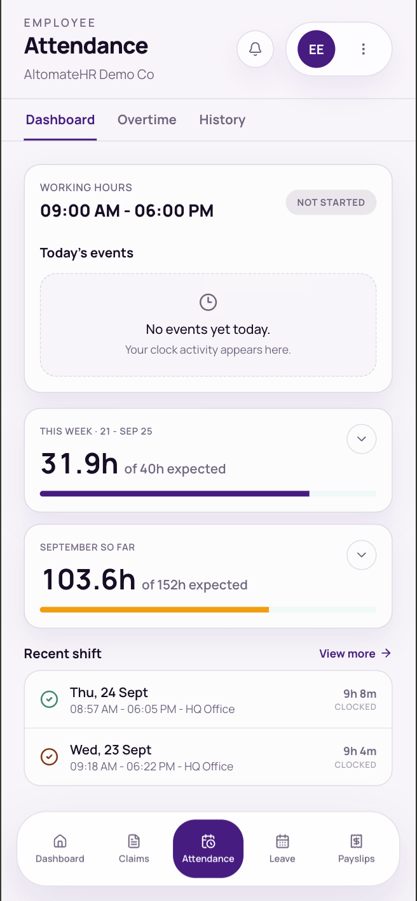
Attendance
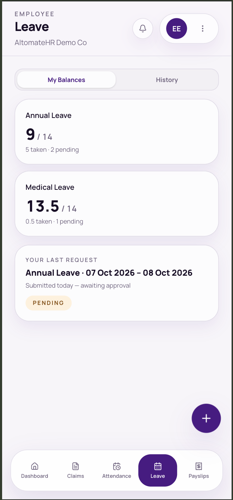
Leave
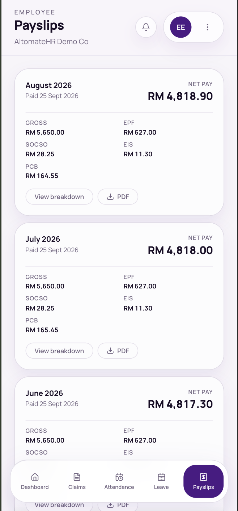
Payslips
The screens you'll live in
Signing in the first time
Your account already exists — HR created it. You just need the link and your starting password.
Open the link
Go to hr.altomate.io in your phone's browser — the same link is in your welcome email (Sign in to AltomateHR). Use Safari on iPhone or Chrome on Android.
Sign in with your work email
Your starting password is your email address followed by the month and day you were born — four digits, no spaces. (Your welcome email says if HR set a different one.)
ExampleEmail
ali@company.com, born 23 November →ali@company.com1123— month first (11), then day (23).Change it straight away
Open the ⋮ menu and choose Change password. Enter your current password, then a new one (at least 8 characters) twice. This signs you out of every device, including this one — sign back in with the new password. (If you signed in through Altomate, your password is managed there, so this isn't in the menu.)
Forgotten your password
Tap “Forgot your password?”
Enter your work email and tap Send code.
Check your email
A 6-digit code arrives. It doesn't last long, and too many wrong guesses cancel it — tap Send a new code if needed. Check spam if it's not there.
Set a new password
Enter the code and a new password twice, then Set new password, and sign in.
If you came in through the Altomate app and see “That sign-in link has expired or was already used”, go back to Altomate and open altomate HR again — each link works once, for two minutes.
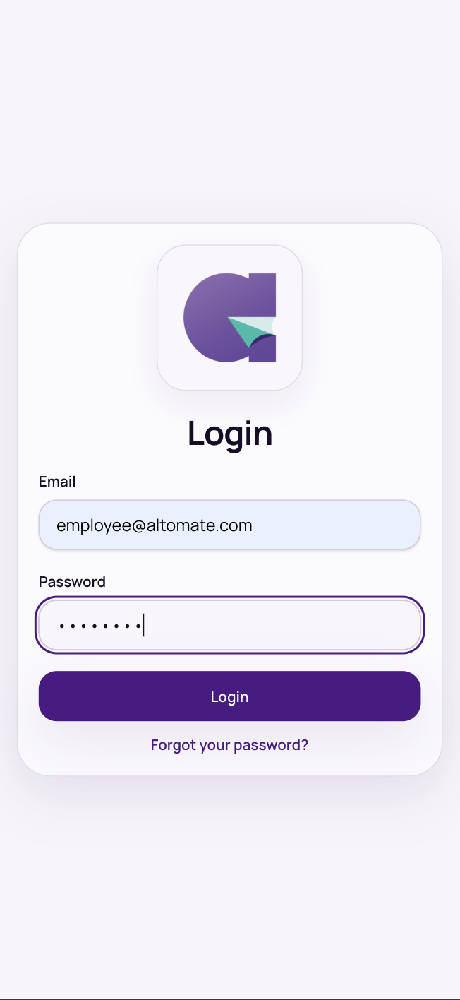
Sign in
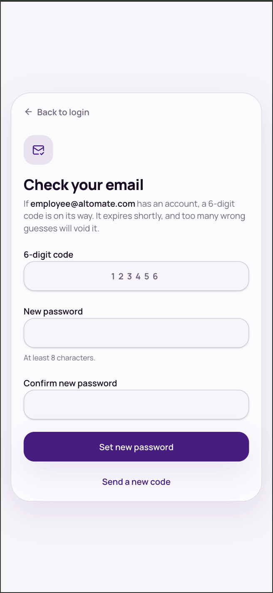
Reset code
Signing in, and resetting a forgotten password
Putting it on your phone
Two taps, and AltomateHR sits on your home screen with its own icon.
iPhone (Safari)
- Open hr.altomate.io in Safari.
- Tap the Share button, then Add to Home Screen, then Add.
Android (Chrome)
- Open hr.altomate.io in Chrome.
- Tap the ⋮ menu, then Install app (or Add to Home screen).
A bar says “A new version of AltomateHR is available.” Tap Reload.
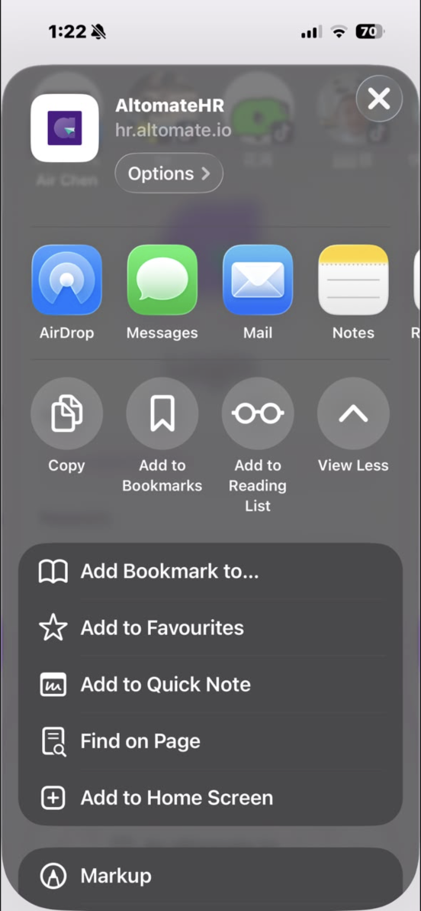
Add to Home Screen
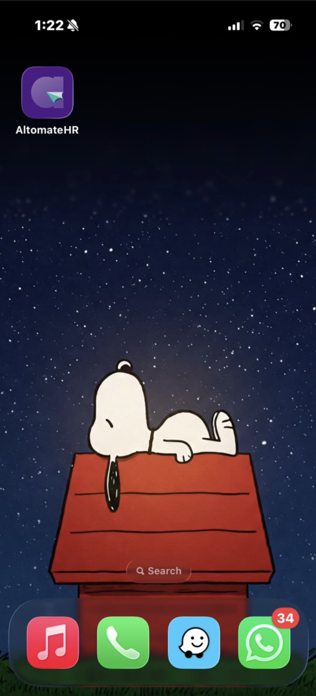
On the home screen
Installing on a phone
Finding your way around
- Bottom tabs — Dashboard, Claims, Attendance, Leave, Payslips. Some tabs have sub-pages in a strip just under the header (e.g. Attendance → Dashboard, Overtime, History).
- The bell — approvals and decisions about your requests. Tap one to go straight to it.
- The ⋮ menu — change password, notifications, What's new (our release notes — a dot shows on the menu until you've read the latest), Guide (opens this guide in a new tab), switch company, Appraisify, log out.
Supervisors see extra sub-pages and red number badges for what's waiting on them — see Approving for your team.
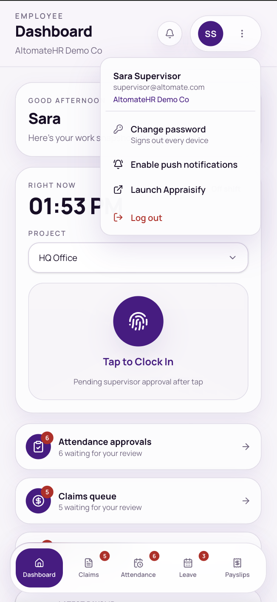
The ⋮ menu
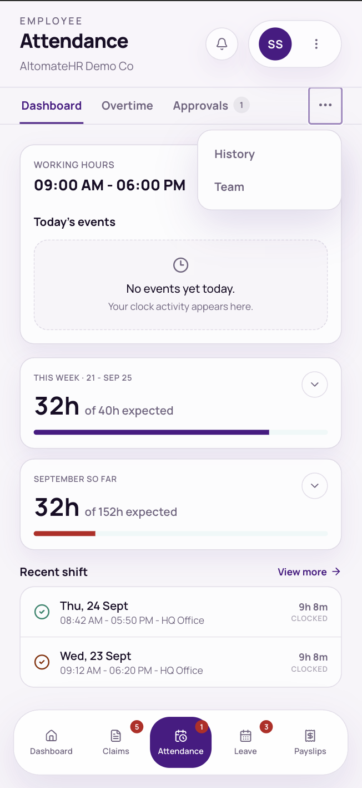
Supervisors: extra sub-pages under ⋯
The account menu, and the supervisor ⋯ menu
Clocking in and out
Optional
From the Dashboard, on the Right now card.
Pick your project
Choose where you're working from Project. You only see the projects you're assigned to.
Tap to Clock In
Allow location when your phone asks. Under the project, a small line already tells you where you stand — On site · 45 m away, or Off site · 612 m away (limit 500 m) — so an off-site clock-in asking for a reason and photo is no surprise. Tap the little refresh arrow beside it to check again. Your clock-in goes to your supervisor for approval.
Breaks
While you're on the clock, Start break and End break sit under the button.
Tap to Clock Out
A summary shows your hours. Tap Clock out now.
Not at the site?
If you're further from the site than your company allows, or your phone couldn't read your location, a box asks why and for a photo. Add both and you're clocked in — your supervisor sees the note and photo when approving.
Some sites only allow clocking in from the office Wi-Fi. If you see this message, connect to the site's network and try again. If you can't, tell your supervisor.
More than one shift a day
After clocking out you can Start another shift. Today's shifts are listed with your total hours.
Forgot to clock out yesterday?
The Dashboard says so. Close that shift first — you can correct its end time on the way out (see Fixing a wrong time). If your company has switched on automatic clock-out, a shift left open too long is closed for you and sent for approval.
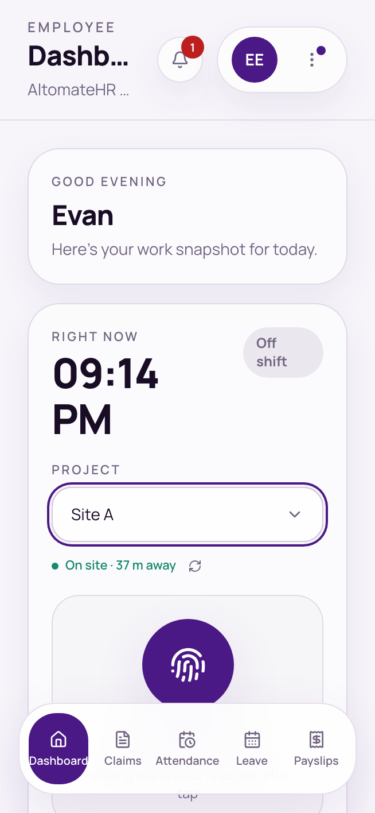
Before clocking in
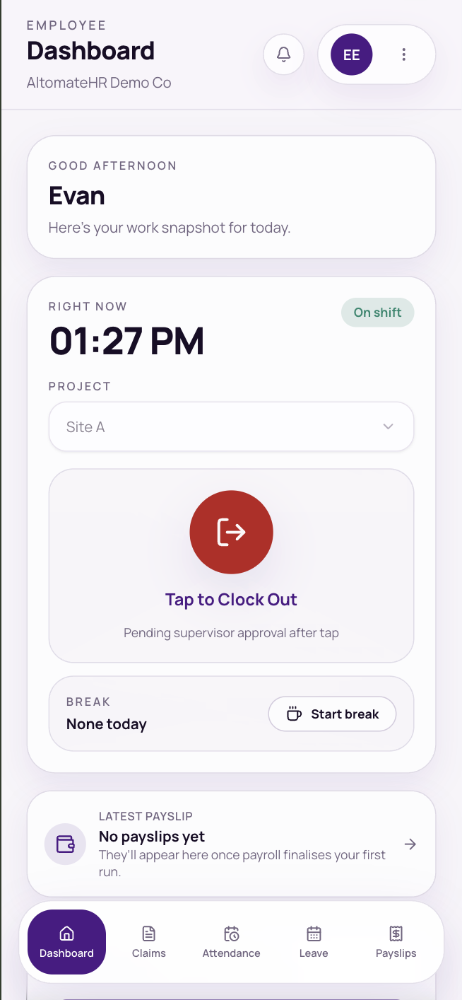
On the clock
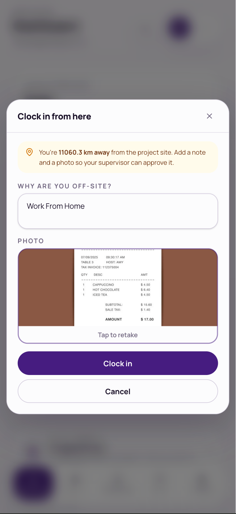
Off-site box
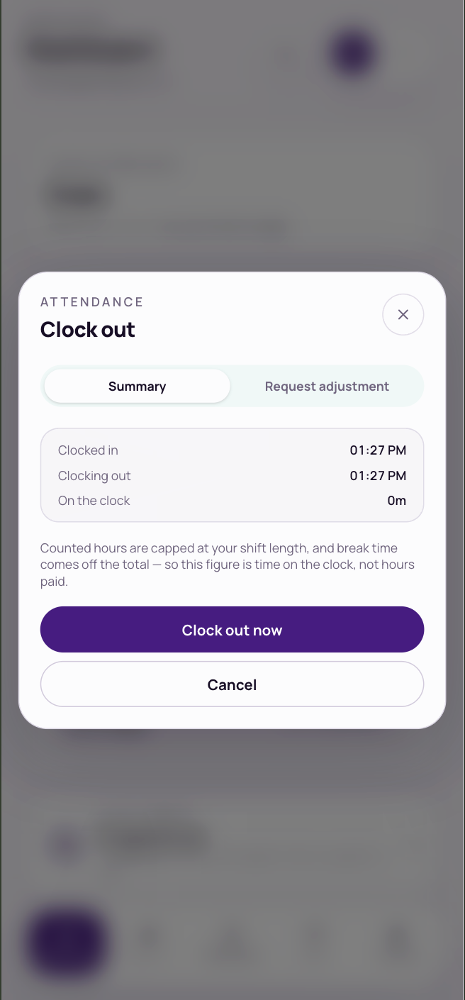
Clocking out
Clocking in, on the clock, off-site, and clocking out
Fixing a wrong time
Forgot to clock out on time? Correct it as you clock out.
Tap to Clock Out
In the Clock out box, open the Request adjustment tab.
Enter the right time
The corrected date and time you actually finished, and a reason.
Tap “Clock out & request”
You're clocked out now, and your supervisor decides whether to use the corrected time. Until then your history shows it as awaiting approval.
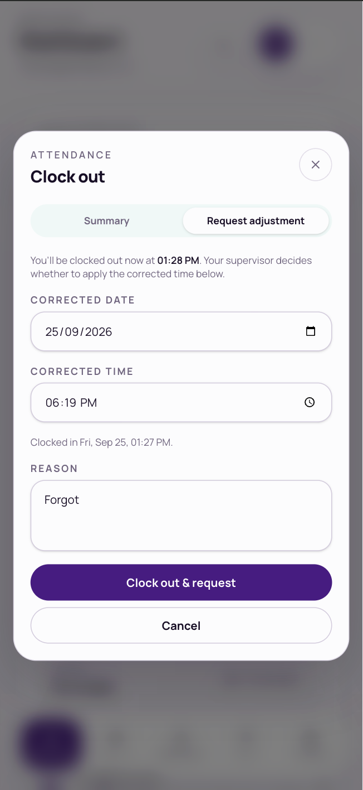
Correcting your clock-out time
Your attendance
Optional
- Attendance → Dashboard — today's clock-ins (on-site or off-site), and your hours this week and month against what's expected: break time taken off, time beyond your shift, rest days, holidays and overtime.
- Attendance → History — every day, month by month, with late, missing, on-leave and off-site marked. Turn on Needs attention to see only the problem days, and Download PDF for a copy.
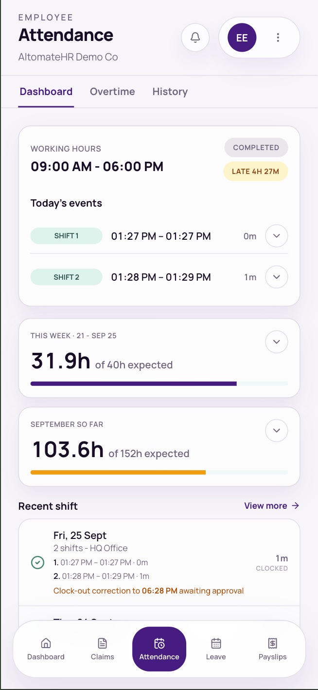
Dashboard
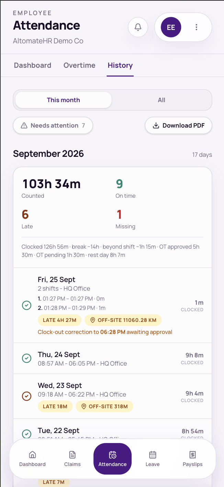
History
Your hours and history
Claiming overtime
Attendance → Overtime, then the + button. Overtime is always claimed by you — it isn't created from your clock times.
Fill it in
Project, date, start and end time, and what the extra work was for.
Add before-work photos or files
Required — at least one photo or PDF from before the work started. Choose several at once or Add more, up to 10 files of 8 MB each; the small × beside a file takes it off. The form shows the rate it'll be paid at (normal day, rest day or public holiday). If your company banks overtime as time off, it says so. Before files can't be changed after you submit.
Attach the after-work files
When the work's done, open the overtime and Attach after (then Add more for extras). It can't be approved without at least one. While it's still pending you can remove a file with the ×, and confirm.
Filter your list by Pending, Approved, Rejected or Cancelled. A rejected one shows the reviewer's note.
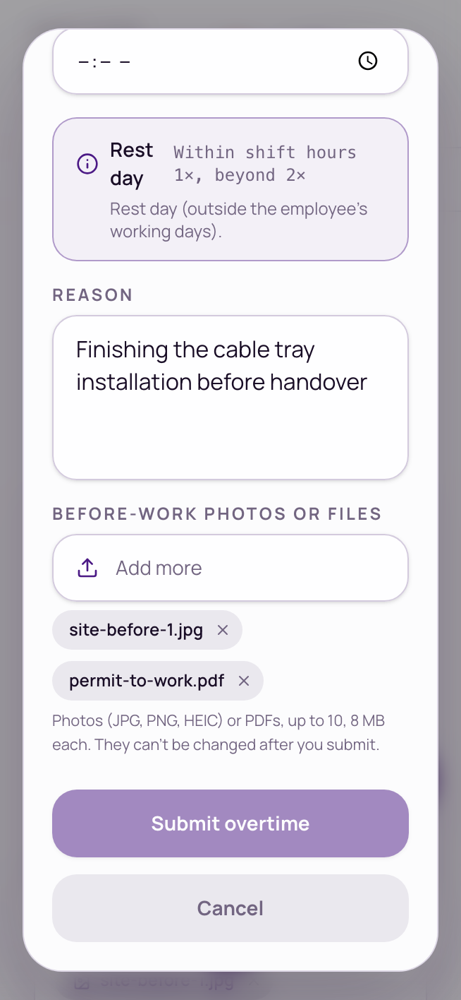
Submit overtime
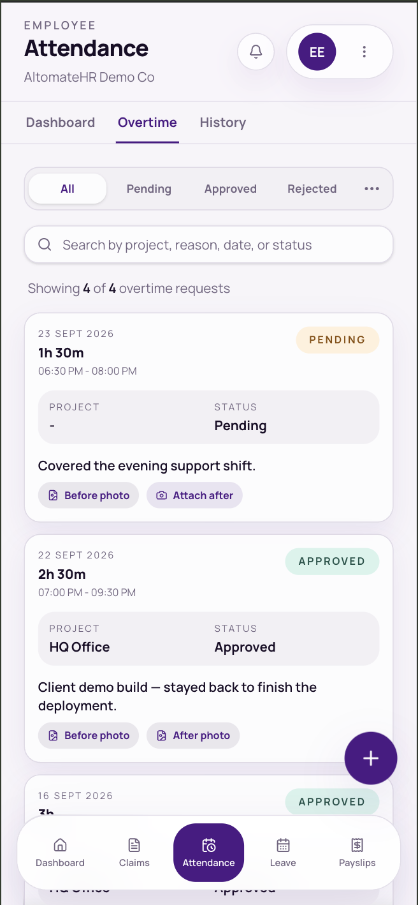
Overtime list
Claiming overtime
Applying for leave
Leave → My Leave. My Balances shows what you have left of each type — the live figure — and History lists every request.
Tap + (Apply for leave)
Or Request leave on the Dashboard.
Pick the type and dates
Your balance for that type shows as you choose. Unpaid leave has no balance.
Add a reason and attachment
Both optional — attach your MC here (a photo or PDF, up to 8 MB).
Submit
It goes to your supervisor. You'll get a notification when it's decided.
Only your working days count — weekends and public holidays in the range are left out. If you ask for more than your balance, it's refused.
Changing your mind
While it's still pending, open it and tap Cancel — then apply again with the right dates.
Once it's approved, and hasn't started yet, tap Request cancellation. Add a reason if you like and tap Send request (or Keep my leave to back out). Your approver reviews it like the original request. Your leave stays booked, and its days stay taken, until they agree — then it's cancelled and the days go back into your balance. The leave shows a Cancellation requested tag meanwhile; change your mind and tap Withdraw request. If they say no you'll see Cancellation declined, and the leave goes ahead. Leave that has already started can't be cancelled here — ask HR.
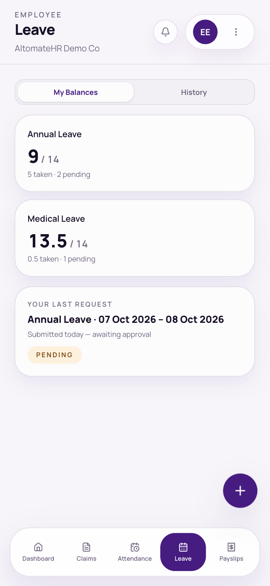
My Balances
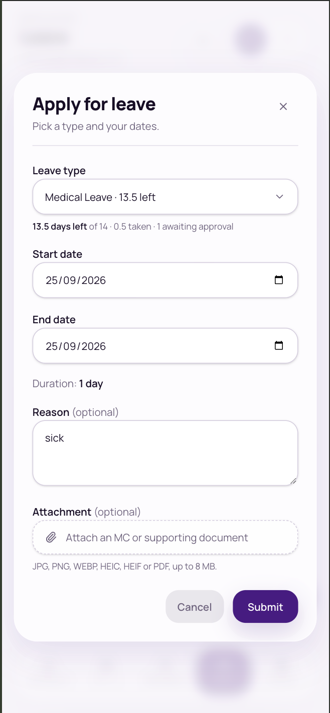
Apply for leave
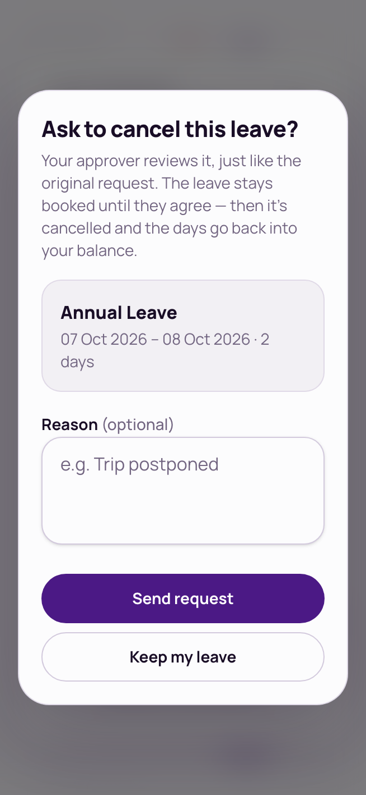
Ask to cancel
Balances, applying and asking to cancel
Submitting a claim
Optional
Claims → +, or Submit new claim on the Dashboard. A few taps, and the receipt fills in the form for you.
Who paid?
My own money (you'll be reimbursed) or Company money (a company card or account).
What kind?
Expense claim or Mileage claim.
Upload the receipt
For an expense, upload the main receipt and tap Read receipt & continue. The app reads it and fills in the details.
Check the details, then submit
Check every field — especially the amount. Then Submit claim.
The fields worth getting right
- Chart of account — what the expense was for. Your company decides which ones you can pick.
- Project — the site or job it belongs to.
- Company bank account — for company money: which card or account paid.
- Spending at — the shop or supplier (required for company money).
- Supporting documents — anything else, like an invoice.
Mileage claims
Enter the distance, the date, and where you went from and to. The amount is worked out from your company's mileage rate.
If a claim is over the spend limit for that account, you can still submit it — it's flagged for your approver to look at.
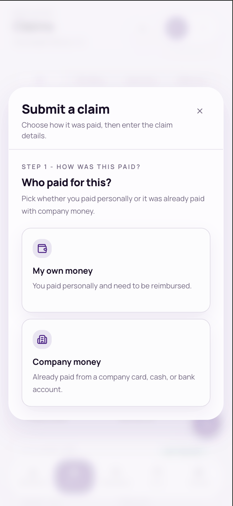
Who paid?
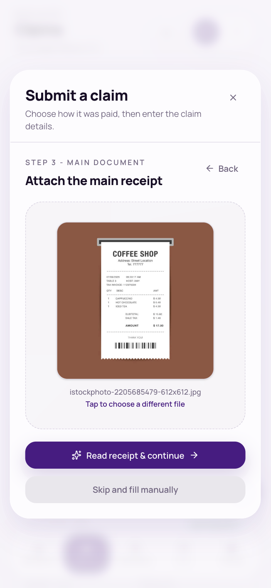
Reading the receipt
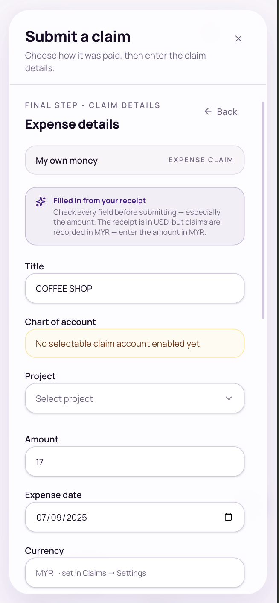
Claim details
Submitting a claim
Tracking your claims
Claims → My claims, filtered by Pending, Approved or Rejected.
- Open a claim to see its details, the receipt, and the reviewer's note if it was rejected.
- Changing it: while it's pending, open it and tap Edit claim.
- The Dashboard shows what you've been reimbursed this year.
Your payslips
The Payslips tab lists every payslip once payroll is finalised — net pay, gross, EPF, SOCSO, EIS and PCB on each.
- View breakdown — earnings, deductions and every line item.
- PDF — download it.
- TP1 — download your Borang PCB/TP1, the tax reliefs you've claimed for that month.
- Your latest payslip is also on the Dashboard. Your company may email it to you as well.
Form EA. Above your payslips, a Form EA card has one row for each year you were paid in — your yearly statement of pay, for filing your income tax return. When all 12 months of that year's payroll have been approved, the row shows Download EA. Until then it tells you when it will be ready, for example The 2026 EA form will be ready once all 12 months of 2026 payroll are approved. (9 of 12 months so far). The card doesn't appear until you have a payslip, and you still see it if you've left the company.
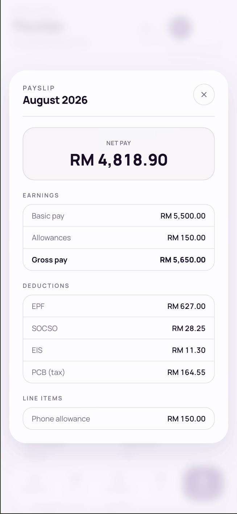
A payslip
Password, alerts & companies
All in the ⋮ menu at the top.
- Change password — signs you out of every device afterwards. Not shown if you signed in through Altomate — your password is managed there.
- Notifications — Enable push notifications to hear about approvals and decisions even when the app is closed (shown only if your browser supports it). You're also asked once, the first time you sign in.
- What's new — what we've added or changed lately, newest first. A dot shows on the ⋮ menu until you've read the latest.
- Guide — opens this guide in a new tab.
- Switch company — if you work for more than one company in the group, pick another here. On a computer it's the company name at the top instead. When you sign in you land on the company you work at now. A company you've left or been transferred out of is marked Former · payslips only, and is listed after your current ones.
- Launch Appraisify — opens your company's appraisal app, already signed in.
- Log out. (Not shown if you signed in through Altomate — sign out there.)
A company you no longer work at
Pick a Former · payslips only company and you'll see only Payslips, with a notice at the top: you can still open and download your old payslips, but clocking in, claims and leave are only in your current company — switch back from the company menu.
- Leave company — in that notice. You're asked Leave …? to confirm (press Leave company again). The company disappears from your account and you can no longer open its payslips from here, so download any you need first. The company keeps your records; ask HR if you need something later.
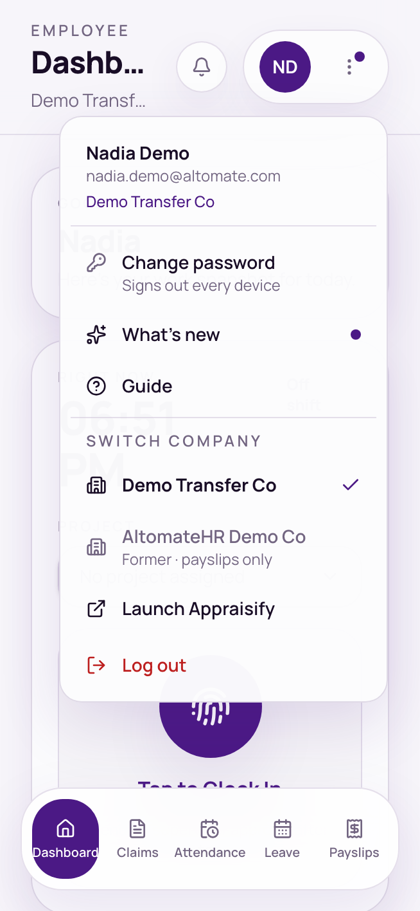
Company menu
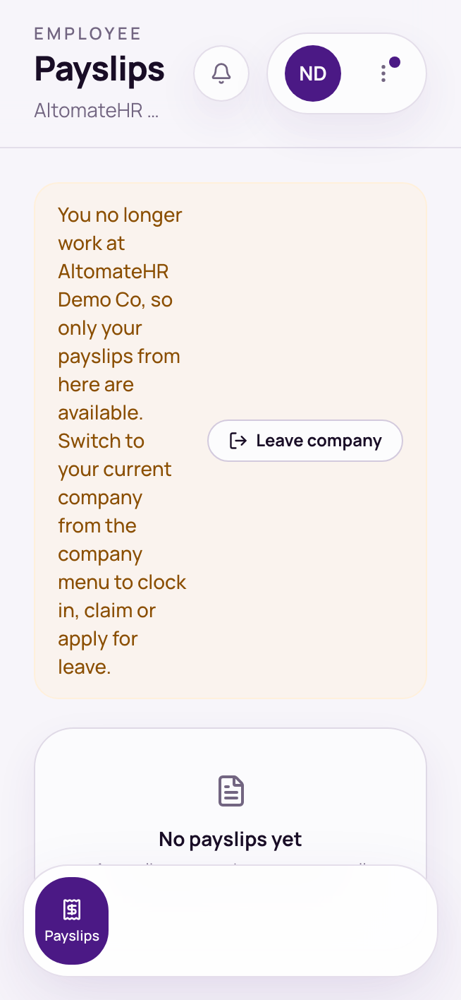
Former company
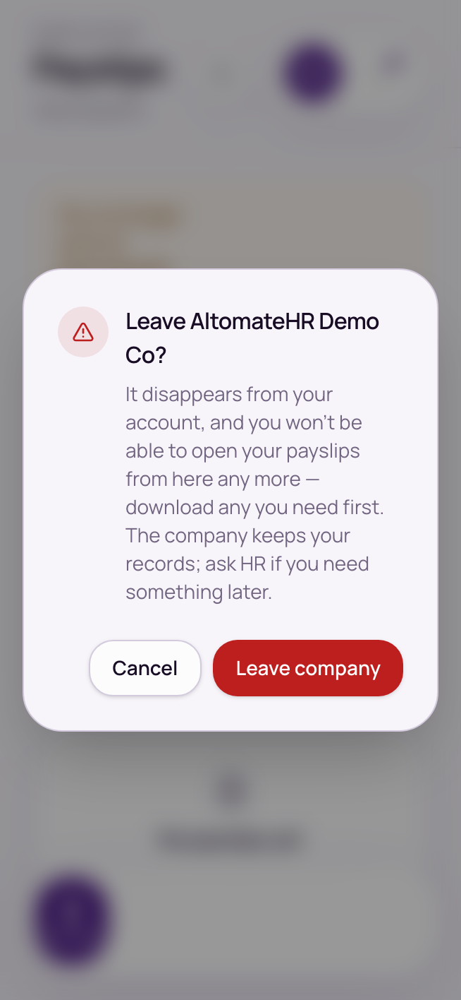
Confirm
A company you no longer work at
Approving for your team
Supervisors
If you're a supervisor, requests from your team come to you. Red badges on the tabs show how many are waiting, and the Dashboard has a card for each queue.
| Queue | Where |
|---|---|
| Claims | Claims → Claims queue |
| Leave | Leave → Approvals |
| Clock-ins, clock-outs and time corrections | Attendance → Approvals → Attendance |
| Overtime | Attendance → Approvals → Overtime |
Approving and rejecting
- Approve or Reject each one. Rejecting always asks for a reason — it's what your team member sees.
- Several at once: tap Select, pick them (or Select all), and approve together. Rejections are always one at a time.
- A claim over its spend limit has to be approved on its own.
- Overtime can only be approved once an after-work photo or file is attached. You can open every before and after file from the request.
- For attendance, you see each shift with its location (on-site or off-site), any note and photo, and any corrected clock-out time requested.
- Leave shows who else is off in the same period.
- Cancellation requests — when someone asks to cancel approved leave, it appears in Leave → Approvals tagged Cancellation request, with their reason and the approval trail. The buttons are Approve cancellation and Decline (a reason is required, so they know why the leave still stands). These are decided one at a time, not with Select, and they count in the red badge on Leave.
If your company has more than one level of approval, your approval passes the request to the next level. If something isn't yours to decide, the row says who it's with.
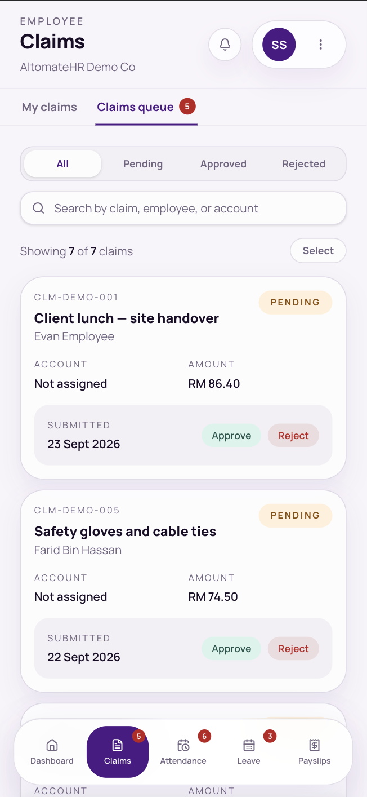
Claims queue
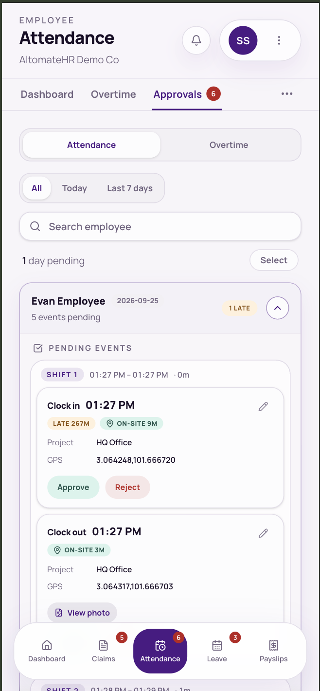
Attendance approvals
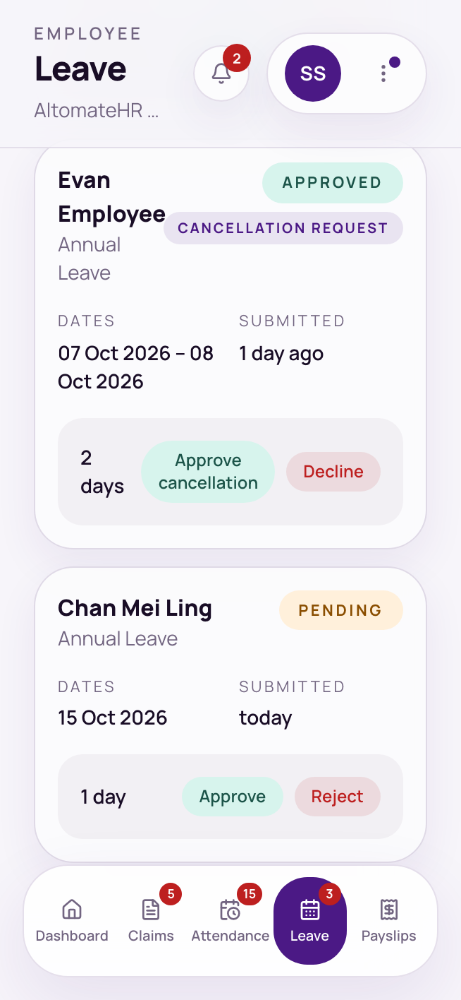
Leave cancellation request
Approving for your team
Your team's day & balances
Supervisors
- Attendance → Team — who's on shift, done or not in, one project at a time, with a team PDF.
- Leave → Team Balances — your team's remaining leave by type, for any year.
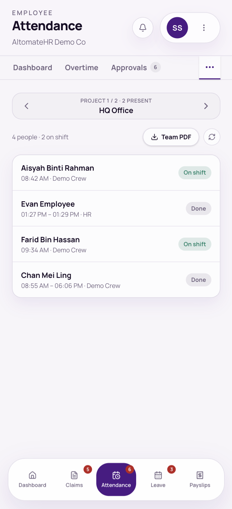
Your team today
Common questions
I can't see the Claims (or Attendance) tab.
It isn't switched on for you. Ask HR if you think it should be.
“No project assigned” — I can't clock in.
You haven't been added to a project yet. Ask your supervisor or HR to add you.
My location won't load.
Allow location for your browser (or the installed app) in your phone's settings and try again. If it still won't, add a note and a photo in the box that appears and clock in anyway.
I clocked out at the wrong time.
Corrections are made when you clock out — the Request adjustment tab. If you've already clocked out, ask your supervisor.
I only see Payslips.
You've opened a company you no longer work at. Switch to your current company from the company menu — see Password, alerts & companies.
Where's my EA form?
It's on the Payslips tab, in the Form EA card above your payslips. It can be downloaded once all 12 months of that year's payroll are approved — until then the card shows how many months are done. If it's past February and it still isn't ready, ask HR.
Where's my payslip?
Payslips appear once payroll for that month is finalised. If it's past payday and it isn't there, ask HR.
I'm not getting notifications.
Open the ⋮ menu and turn on push notifications (if you don't see the option, your browser doesn't support it). On iPhone, install the app to your home screen first — notifications only work from the installed app.